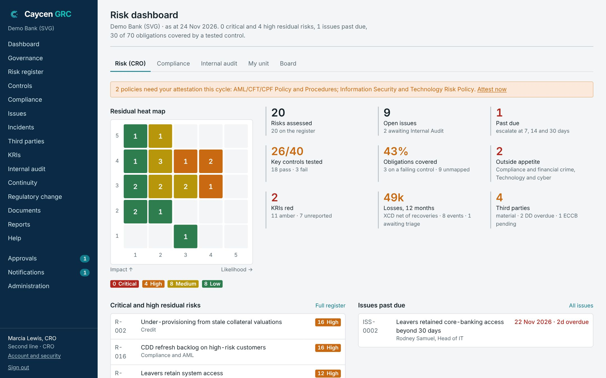
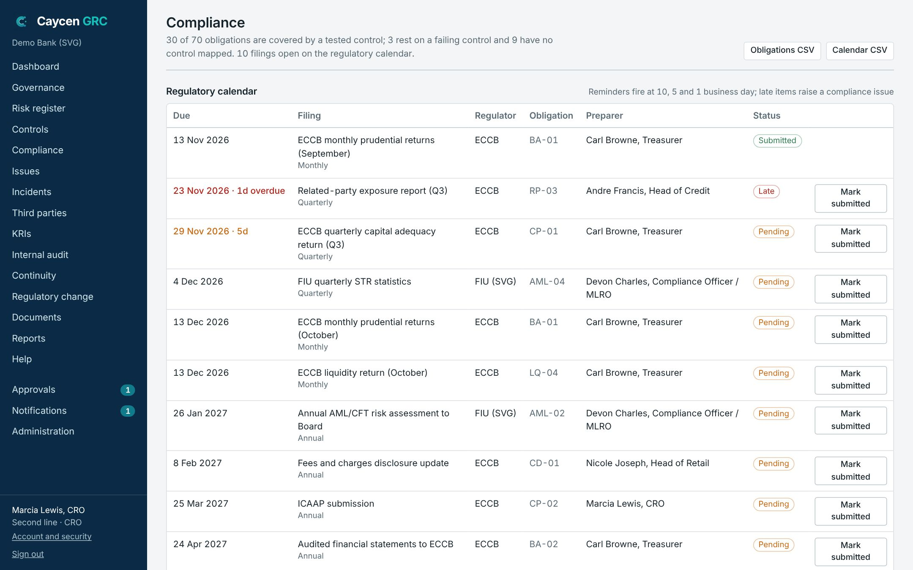
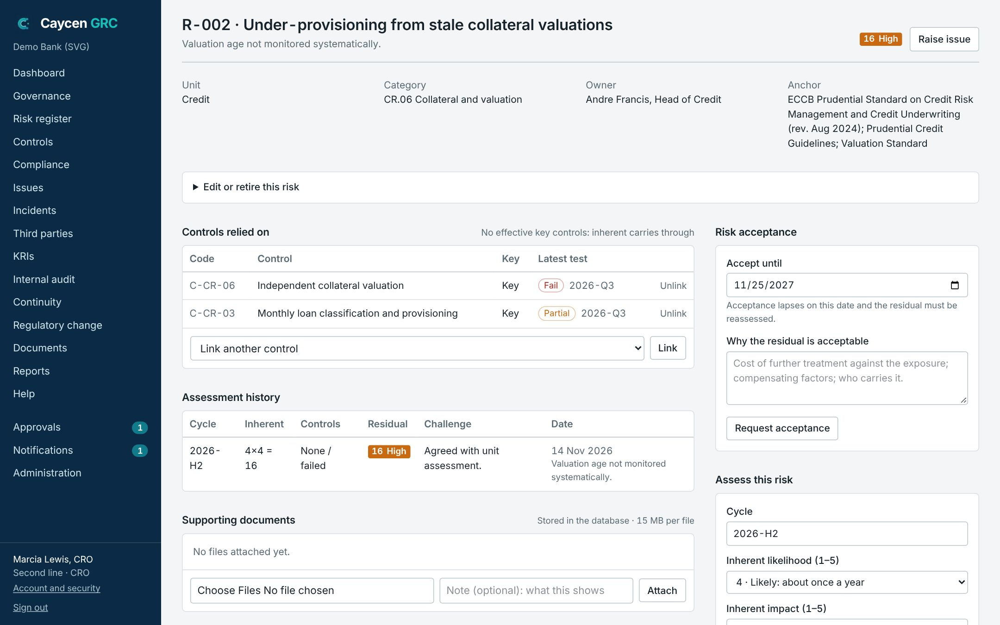
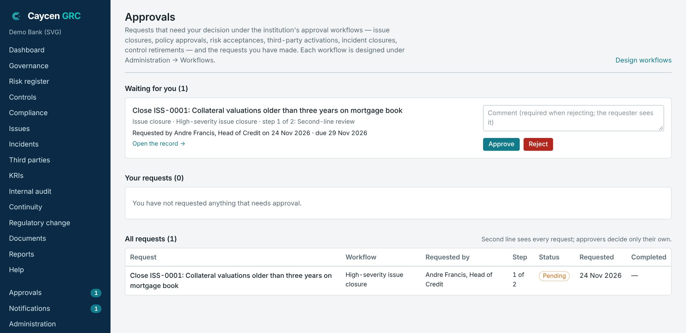

Regulatory content built in
Obligations, controls, risk taxonomy and KRIs for your territory and licence type, loaded the day you start — each obligation cited to its standard, number, effective date and section.
Governance · Risk · Compliance · Eastern Caribbean
CaycenGRC runs the risk, compliance and governance work of banks, credit unions, micro-finance institutions and insurers in the ECCU — with the ECCB's prudential standards, the Banking Act and each territory's non-bank and AML regimes loaded from day one, every requirement cited to its section.

Why it exists
The big GRC suites are priced and staffed for international banks, and the affordable ones arrive empty or written for another country's regulators. CaycenGRC starts with your rulebook in place, so your team spends its time on the risks, not on building the register.
Key features
Obligations, controls, risk taxonomy and KRIs for your territory and licence type, loaded the day you start — each obligation cited to its standard, number, effective date and section.
Inherent risk scored by each unit; residual computed from the latest tests of the key controls it relies on; second-line challenge recorded; risk acceptance with an expiry date.
A library mapped to obligations and risks, tested with evidence on file and its SHA-256 recorded. A failed test raises an issue for the owner and re-scores every risk that relied on it.
Raised, triaged, remediated, evidenced — and validated by someone other than the owner. Past-due items escalate at 7, 14 and 30 days, up to the CRO and the Board.
Thresholds, amber and red alerts, persistent breaches raised as issues. Values arrive by hand, by file, by SFTP or by API — or are computed from your general ledger by formula.
Design who signs off issue closures, policies, risk acceptances, third parties and incidents — by role, person or unit head, in order, with deadlines and escalation.
Versioned policies approved and put in force; attestation campaigns with electronic signatures; a controlled document library with search inside every file.
The Board risk pack and the evidence pack for your prudential regulator, produced from live data; the regulatory calendar with preparers, reviewers and reminders.
Compliance
CaycenGRC knows what your licence asks of you. A St Vincent bank starts with the ECCB's prudential standards — corporate governance, credit risk, liquidity, capital, related parties, outsourcing, operational and technology risk — the Banking Act and the Vincentian AML/CFT regime; a Saint Lucia credit union starts with the Co-operative Societies Act and its regulations. Each obligation shows the controls that meet it and whether they passed their last test.

Risk and controls
Each unit scores its risks on the same five-by-five scale. Residual risk is not a second opinion typed in a box — it is computed from the latest tests of the key controls the risk relies on, so a failed control moves the register the day it is recorded. Risk and Compliance challenge assessments in writing; management can accept a residual, for a period, through an approval.

Governance
Your administrator designs the approval chains — who reviews an issue closure, who approves a policy, who may accept a risk — by role, named person or unit head, in order, with a deadline at each step. Approvers see everything waiting for them in one place; nobody approves their own request; overdue decisions go to the CRO.

Who it's for
Tell us your territory and licence type; CaycenGRC loads the regime that applies and names the right regulator throughout.
Commercial banks and credit institutions licensed under the Banking Act 2015, across all eight territories.
PEARLS-based prudential limits, supervisory committee duties, member lending and the statutory returns.
Lending, consumer protection and conduct obligations for non-bank lenders, with each territory's supervisor named.
General, life and composite insurers, brokers and agents: capital, solvency, statutory deposits, reinsurance, IFRS 17.
Security and integration
Hosted by Caycen Group with each institution's data kept apart, and every control a bank examiner expects. The full security standards, data processing agreement and sub-processor list are published on our trust page.
Getting started
We create your institution with its territory and licence type; your administrator invites colleagues, sets up business units and loads existing registers from spreadsheets. Your team then owns controls, records the first assessments and tests — on content that is already there.
Run by Caycen Group. An annual subscription plus one-off onboarding: configuration, loading your existing registers and training.
Run CaycenGRC on your own data for a defined period with a named team before you commit.
For financial groups with several licensed entities, and for advisory firms serving several institutions.
Book a demonstration
Tell us your institution, territory and licence type. We will show you the obligations, controls and calendar CaycenGRC loads for you, and walk through a risk assessment, a failed control test and an issue to closure — live, on a sample institution of your type.